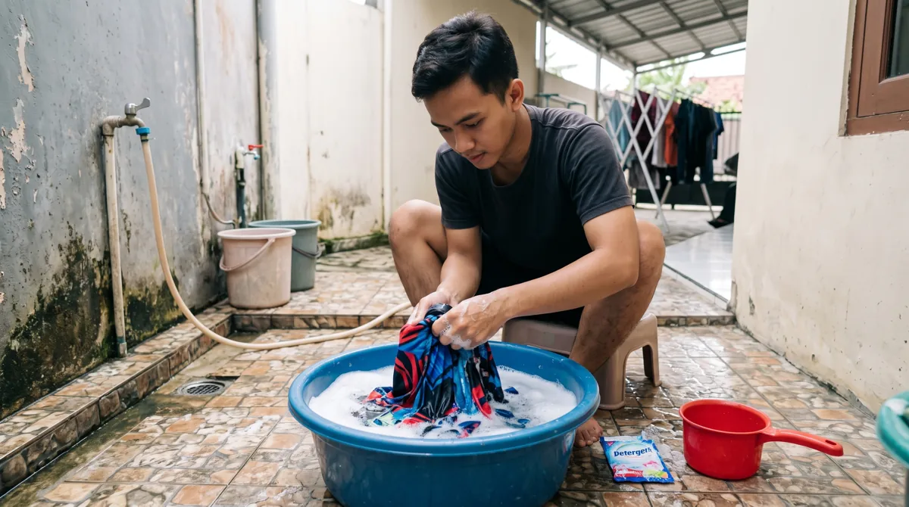

Perawatan yang tepat membantu menjaga tampilan motif, elastisitas kain, dan kenyamanan jersey olahraga. Artikel ini membahas aspek yang perlu diperiksa agar keputusan Anda lebih tepat, baik untuk seragam komunitas, tim olahraga, sekolah, maupun kebutuhan acara.
Dalam memilih layanan jersey printing, sebaiknya pertimbangkan bukan hanya tampilan desain, tetapi juga fungsi bahan, ketepatan ukuran, dan kesiapan data pesanan. Untuk gambaran menyeluruh, baca panduan printing jersey Bandung.
Cuci sesuai petunjuk bahan
Balik jersey sebelum dicuci dan gunakan deterjen lembut sesuai label perawatan. Hindari pemutih keras dan gesekan berlebihan, terutama pada area logo atau aksesori tambahan.
Untuk memperjelas keputusan sebelum produksi, lihat juga pilihan bahan jersey full printing. Informasi tersebut membantu menyesuaikan pilihan dengan kebutuhan tim dan kesiapan pesanan.
Hindari panas berlebihan
Pengeringan di tempat berventilasi sering lebih aman daripada paparan panas tinggi. Jika perlu menyetrika, ikuti petunjuk kain dan hindari menyetrika langsung area dekorasi yang sensitif.

Jika ingin memeriksa detail yang berkaitan, baca cara menilai kualitas jersey printing. Informasi tersebut membantu menyesuaikan pilihan dengan kebutuhan tim dan kesiapan pesanan.
Simpan dalam kondisi kering
Pastikan jersey benar-benar kering sebelum dilipat atau disimpan. Jangan membiarkan pakaian olahraga basah berkeringat menumpuk terlalu lama dalam tas.
Sebagai langkah lanjutan yang praktis, gunakan panduan cara kerja printing jersey sublimasi. Informasi tersebut membantu menyesuaikan pilihan dengan kebutuhan tim dan kesiapan pesanan.
Rutinitas setelah jersey dipakai
Segera angin-anginkan
Setelah berolahraga, jangan membiarkan jersey basah oleh keringat tertutup lama dalam tas. Angin-anginkan dahulu bila belum bisa langsung dicuci.
Pisahkan pakaian
Pisahkan jersey dari pakaian dengan ritsleting, kait, atau permukaan kasar. Gesekan berulang dapat mengganggu permukaan kain dan detail jahitan.
Periksa label perawatan
Ikuti petunjuk perawatan khusus pada produk. Jika ada kombinasi sublimasi dengan aplikasi logo atau aksesori tambahan, perlakuannya mungkin berbeda.
Mencuci dan mengeringkan dengan aman
Gunakan pencucian lembut
Balik jersey sebelum dicuci, gunakan deterjen secukupnya, dan pilih gerakan pencucian yang lembut. Hindari menggosok area cetak atau logo secara agresif.
Hindari panas berlebihan
Jangan menyetrika langsung permukaan desain atau menggunakan suhu tinggi tanpa memeriksa instruksi bahan. Panas berlebih dapat memengaruhi serat sintetis dan aplikasi tambahan.
Keringkan dengan sirkulasi udara
Jemur pada tempat yang memiliki aliran udara baik. Hindari memeras terlalu keras karena dapat mengubah bentuk jahitan dan panel.
Menyimpan jersey agar siap dipakai lagi
Pastikan benar-benar kering
Kelembapan yang tertinggal dapat menimbulkan bau. Simpan setelah kain, kerah, dan bagian lipatan kering sempurna.
Hindari tekanan pada aplikasi tambahan
Jika jersey memakai emblem atau transfer tambahan, jangan menindihnya dengan benda berat atau melipat tepat pada aplikasi dalam waktu lama.
Langkah praktis sebelum menentukan pilihan
Gunakan panduan ini sebagai titik awal, lalu sesuaikan dengan aktivitas, anggaran, kebutuhan desain, dan jumlah anggota tim. Jika terdapat spesifikasi khusus, komunikasikan sejak awal agar solusi yang ditawarkan tidak hanya terlihat menarik di gambar tetapi juga sesuai saat digunakan.
Untuk kebutuhan produksi di Bandung, pelajari juga panduan printing jersey Bandung yang menjelaskan pilihan bahan, teknik sublimasi, serta alur pemesanan. Anda juga dapat mengenal layanan jersey printing dari Zipzip dan mendiskusikan detail proyek secara langsung.
Rutinitas perawatan setelah pertandingan
Segera keluarkan jersey lembap dari tas tertutup. Jika belum sempat mencuci, angin-anginkan di tempat teduh agar keringat tidak mengendap terlalu lama. Periksa petunjuk perawatan khusus dari produsen sebelum menggunakan bahan pembersih.
Balik jersey saat mencuci, pisahkan dari pakaian dengan pengait kasar, dan hindari pemutih agresif. Gunakan putaran lembut serta suhu sesuai label kain. Gesekan berlebihan dapat merusak permukaan kain maupun detail tambahan seperti patch atau transfer.
Keringkan di tempat berventilasi dan hindari menyetrika langsung area logo, nomor, atau dekorasi tambahan. Untuk penyimpanan jangka panjang, pastikan jersey kering sepenuhnya agar tidak muncul bau lembap.
Untuk membandingkan pilihan secara menyeluruh, baca panduan printing jersey Bandung dan lihat layanan jersey printing Zipzip.
Pisahkan jersey setelah pertandingan
Jersey yang basah oleh keringat sebaiknya tidak dibiarkan terlipat dalam tas tertutup terlalu lama. Keluarkan setelah aktivitas dan angin-anginkan sebelum dicuci. Kebiasaan ini membantu mengurangi bau dan kelembapan yang tertahan pada kain. Jika jersey sangat kotor, periksa area noda terlebih dahulu agar tidak perlu menggosok seluruh permukaan dengan keras. Hindari mencampurnya dengan barang yang memiliki pengait tajam.
Periksa label perawatan sebelum mencuci
Instruksi pada label produk harus menjadi acuan utama karena komposisi bahan dan finishing bisa berbeda. Secara umum, perlakuan lembut dengan air bersuhu rendah sering lebih aman untuk pakaian olahraga sintetis. Balik jersey bila perlu untuk mengurangi gesekan pada bagian luar. Gunakan deterjen sesuai petunjuk dan jangan menambah bahan kimia keras tanpa mengetahui kecocokannya. Jika ragu, tanyakan kepada produsen sebelum mencoba perlakuan khusus.
Mengatasi noda tanpa merusak kain
Tangani noda sedini mungkin dengan cara yang sesuai jenis noda dan bahan. Hindari menyikat keras motif atau menggosok area jahitan berulang kali. Uji pembersih pada bagian kecil yang tidak mencolok jika produk perawatan mengharuskannya. Jangan menggunakan pemutih kuat hanya untuk mengejar warna putih lebih cerah, karena dapat memengaruhi kain dan detail cetak. Setelah noda ditangani, bilas hingga residu deterjen berkurang.
Menghindari panas yang tidak diperlukan
Suhu tinggi dapat memengaruhi serat sintetis, elastisitas, atau elemen tambahan pada jersey. Karena itu, jangan langsung menyetrika area cetak dengan panas tinggi. Ikuti label bila penyetrikaan diperbolehkan, dan gunakan perlindungan sesuai petunjuk. Pengeringan dengan panas berlebih juga sebaiknya dihindari jika tidak direkomendasikan. Jemur dengan sirkulasi udara yang baik; penjemuran di tempat teduh sering membantu menjaga kondisi kain.
Memilih cara mencuci yang lembut
Jika memakai mesin cuci, pertimbangkan program lembut dan kantong laundry sesuai petunjuk produk. Hindari mencuci bersama benda yang memiliki ritsleting terbuka atau velcro yang dapat menarik serat. Untuk cuci tangan, tekan dan remas perlahan tanpa memelintir terlalu kuat. Gesekan berlebihan dapat membuat permukaan kain tampak berbulu. Pastikan deterjen terbilas dengan baik sebelum jersey dikeringkan.
Cara menyimpan agar bentuk tetap terjaga
Simpan jersey hanya setelah benar-benar kering. Lipat rapi atau gantung pada hanger yang sesuai dengan bahan dan ruang penyimpanan. Hindari menekan tumpukan terlalu berat pada bagian logo atau aksen tambahan. Jika disimpan untuk musim pertandingan berikutnya, periksa kelembapan lemari secara berkala. Jangan menaruh jersey di dalam kantong tertutup ketika masih lembap karena bau dan noda dapat berkembang.
Perawatan khusus untuk jersey tim
Buat panduan singkat yang bisa dibagikan kepada seluruh anggota agar standar perawatan tidak berbeda-beda. Cantumkan cara mencuci, mengeringkan, dan menyimpan sesuai label. Untuk jersey yang dipakai bergantian atau dikumpulkan setelah pertandingan, pisahkan berdasarkan nama atau nomor agar tidak tertukar. Periksa kerusakan kecil seperti benang lepas lebih awal sebelum berkembang menjadi masalah yang lebih besar.
Kapan perlu menghubungi produsen
Jika warna berubah drastis setelah mengikuti petunjuk perawatan, jahitan mudah terlepas, atau terdapat masalah pada cetak, dokumentasikan kondisi produk dan riwayat pemakaiannya. Hubungi vendor dengan informasi pesanan yang jelas. Hindari mencoba perbaikan panas atau bahan kimia sendiri sebelum mengetahui penyebabnya. Untuk memahami karakter produk sejak awal, baca cara memeriksa kualitas jersey printing.
Pertanyaan yang sering muncul
Pisahkan jersey setelah pertandingan?
Jersey yang basah oleh keringat sebaiknya tidak dibiarkan terlipat dalam tas tertutup terlalu lama. Keluarkan setelah aktivitas dan angin-anginkan sebelum dicuci.
Periksa label perawatan sebelum mencuci?
Instruksi pada label produk harus menjadi acuan utama karena komposisi bahan dan finishing bisa berbeda. Secara umum, perlakuan lembut dengan air bersuhu rendah sering lebih aman untuk pakaian olahraga sintetis.
Mengatasi noda tanpa merusak kain?
Tangani noda sedini mungkin dengan cara yang sesuai jenis noda dan bahan. Hindari menyikat keras motif atau menggosok area jahitan berulang kali.
Artikel terkait yang dapat membantu
- Jenis Bahan Jersey Full Printing: Dryfit, Microfiber, dan Interlock
- Ciri-Ciri Jersey Printing Berkualitas yang Perlu Diperiksa
- Apa Itu Printing Jersey Sublimasi? Cara Kerja dan Keunggulannya
Masih ada pertanyaan tentang spesifikasi atau kebutuhan tim? Hubungi Zipzip untuk membahas opsi yang sesuai dengan desain dan jadwal Anda.
Bacaan lanjutan untuk perencanaan jersey
Tahap berikutnya bisa dipelajari melalui panduan yang saling melengkapi berikut.